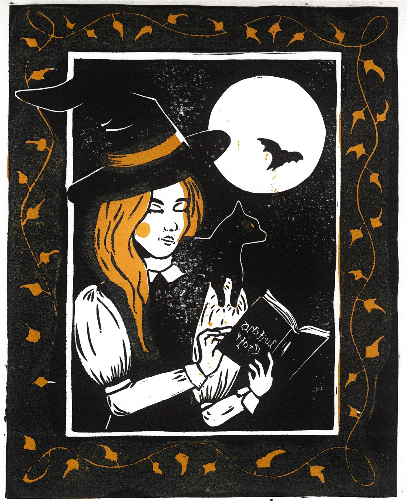

(The linoprints on this page are either not my usual style or based on other artists works or styles.)

My first time experimenting with two-colour linoprints! I designed and made this witchy print in September 2020.
A print featuring a valkyrie. The style of this linoprint is inspired by Jessica Benhar while the motive is my design.

My linoprint rendering of the Astronaut/Cosmonaut mural in Berlin by French street-artist Ash.